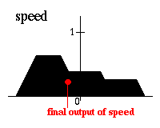

Таким образом, решением контроллера нечеткой логики является нечеткое множество (для скорости). Далее необходимо выбрать одно значение для представления конечного выходного значения. Существует несколько эвристических методов (методов дефаззификации), один из которых, например, предполагает выбирать в качестве конечного значения центр тяжести нечеткого множества:

Вся данная процедура называется контроллером Мамдани (Mamdani controller).
Следующая страница представляет приложения нечеткой логики.